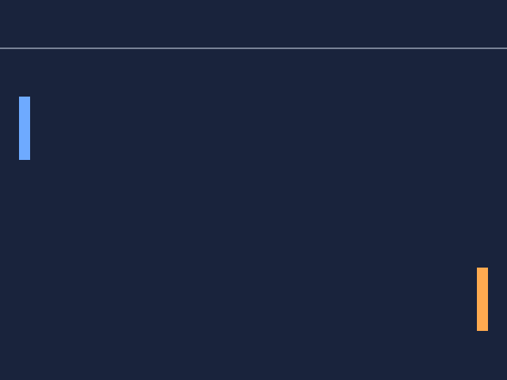
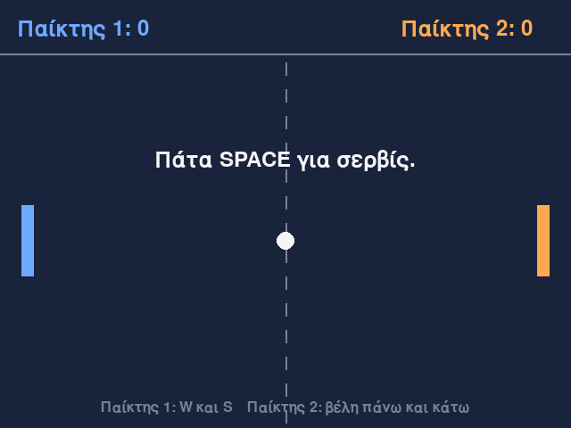
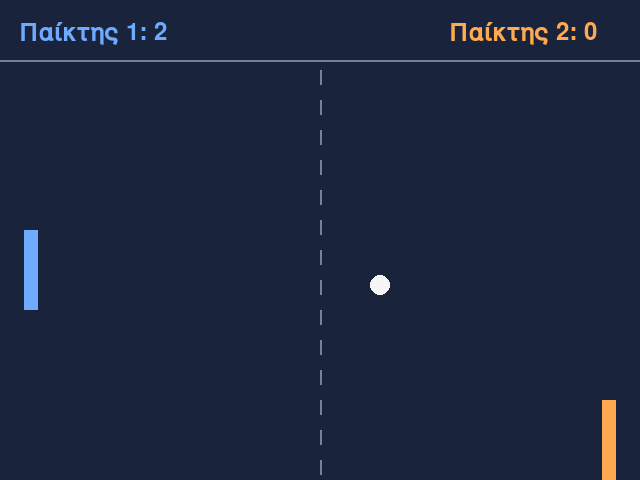
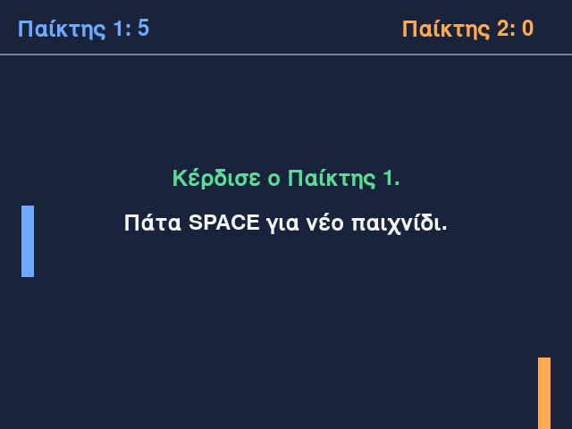

Μάθημα 9: Pong¶
Παιχνίδι: το κλασικό Pong για δύο παίκτες, με δύο ρακέτες και μια μπάλα· ο πρώτος που φτάνει τους πέντε πόντους κερδίζει
Διάρκεια: 4 κύκλοι × (περίπου 45′ εργασία + 15′ διάλειμμα)
Φύλλο εργασίας
Αυτή η σελίδα εξηγεί τις έννοιες. Οι ασκήσεις και οι οδηγίες για κάθε κύκλο βρίσκονται στο Φύλλο εργασίας 9. Δούλεψε με τις δύο σελίδες ανοιχτές.
Αρχεία εργαστηρίου¶
| Αρχείο | Κύκλος |
|---|---|
| 01-paddles.py | 1 |
| 02-classes.py | 2 |
| 03-collisions.py | 3 |
| 04-final.py | 4 |
| exercises.py | 1–4 (οι ασκήσεις «γράψε εσύ») |
| check_exercises.py | 1–4 (αυτοέλεγχος των ασκήσεων) |
Κατέβασε και τα έξι αρχεία στον ίδιο φάκελο.
Η αποστολή¶
Το Pong είναι από τα πρώτα βιντεοπαιχνίδια. Δύο παίκτες κινούν από μία ρακέτα πάνω και κάτω και προσπαθούν να χτυπήσουν την μπάλα, ώστε να περάσει από τον αντίπαλο. Όποιος αφήσει την μπάλα να βγει από την πλευρά του δίνει έναν πόντο στον αντίπαλο. Κάθε φορά που η μπάλα χτυπά ρακέτα επιταχύνει, και η γωνία με την οποία φεύγει εξαρτάται από το σημείο της ρακέτας που τη χτύπησε. Ο πρώτος που φτάνει τους 5 πόντους κερδίζει.
Στο Μάθημα 8 ο παίκτης πατούσε ένα πλήκτρο τη σωστή στιγμή. Σήμερα δύο παίκτες κινούν συνεχώς τις ρακέτες τους, και τα αντικείμενα του παιχνιδιού συγκρούονται. Χρειάζονται τέσσερα πράγματα:
- Πλήκτρα που κρατιούνται πατημένα: η
pygame.key.get_pressed(). - Αντικείμενα με δικές τους κλάσεις: οι κλάσεις
PaddleκαιBall, δηλαδή το Μάθημα 6 σε ένα παιχνίδι. - Συγκρούσεις: η μέθοδος
colliderect, η γωνία αναπήδησης και η ταχύτητα που μεγαλώνει. - Χειριστές συμβάντων ως συναρτήσεις: ο κώδικας που απαντά στα συμβάντα μαζεύεται σε συναρτήσεις.
Σε κάθε κύκλο γράφεις μία δική σου άσκηση με αυτοέλεγχο, και στο τέλος το παιχνίδι μπορεί να τρέξει με τον δικό σου κώδικα.
Στο τέλος θα μπορείς¶
- να διαβάζεις τα πλήκτρα που κρατιούνται πατημένα με την
pygame.key.get_pressedκαι να εξηγείς πότε προτιμάς τα συμβάνταKEYDOWNκαιKEYUP. - να κινείς δύο αντικείμενα ταυτόχρονα, με διαφορετικά πλήκτρα, και να τα κρατάς μέσα σε όρια.
- να γράφεις μια κλάση με ιδιότητες και μεθόδους από προδιαγραφή (η κλάση
Paddle). - να οργανώνεις ένα παιχνίδι σε αντικείμενα που συνεργάζονται (
PaddleκαιBall) και σε συναρτήσεις σχεδίασης. - να ελέγχεις αν δύο ορθογώνια επικαλύπτονται με την
colliderect, και να βρίσκεις τη γωνία αναπήδησης από το σημείο της σύγκρουσης. - να γράφεις χειριστές συμβάντων ως συναρτήσεις που επιστρέφουν ενέργειες.
- να διαχειρίζεσαι πόντους, σερβίς και τέλος παιχνιδιού με καταστάσεις.
Πριν αρχίσεις¶
- Μέσα στον φάκελο
python-gamesφτιάξε τον φάκελο09-pong. - Κατέβασε εκεί τα έξι αρχεία του πίνακα, με τα ακριβή τους ονόματα.
- Άνοιξε τον φάκελο στο VS Code και άνοιξε τερματικό.
- Έλεγξε ότι η pygame-ce είναι εγκατεστημένη, όπως στο Μάθημα 7:
python -c "import pygame; print(pygame.version.ver)". - Φτιάξε ένα κενό αρχείο
sandbox.pyγια δοκιμές.
Ο κύκλος εργασίας
Πρόβλεψη → εκτέλεση → σύγκριση → εξήγηση. Στα παιχνίδια με πλήκτρα η πρόβλεψη είναι: «ποια πλήκτρα κρατιούνται σε αυτό το καρέ, και τι αλλάζει;». Συμπλήρωσε τον πίνακα στο χαρτί πριν τρέξεις τον κώδικα.
Δύο παίκτες, ένα πληκτρολόγιο
Ο αριστερός παίκτης παίζει με τα W και S, ο δεξιός με τα βέλη πάνω και κάτω. Για να λαμβάνει το παράθυρο τα πλήκτρα, πρέπει να έχει την εστίαση: κάνε πρώτα ένα κλικ πάνω του. Αν δεν αντιδρούν τα W και S ενώ αντιδρούν τα βέλη, άλλαξε τη γλώσσα του πληκτρολογίου σε αγγλικά (EN) και δοκίμασε ξανά.
Κύκλος 1 — Πλήκτρα που κρατιούνται¶
Σε αυτόν τον κύκλο δύο ρακέτες κινούνται πάνω και κάτω, όσο κρατάς πατημένα τα πλήκτρα τους.
1.1 Δύο τρόποι να διαβάσεις το πληκτρολόγιο¶
Στο Μάθημα 8 διάβασες το πληκτρολόγιο με συμβάντα: το KEYDOWN έρχεται μία φορά, τη στιγμή που πατιέται ένα
πλήκτρο, και το KEYUP μία φορά, όταν αφεθεί. Ταιριάζουν σε ενέργειες που γίνονται μία φορά: σερβίς, παύση, έξοδος.
Μια ρακέτα όμως πρέπει να κινείται συνεχώς, όσο κρατάς το πλήκτρο. Εδώ ρωτάμε αλλιώς: «ποια πλήκτρα είναι πατημένα
αυτή τη στιγμή;». Την απάντηση τη δίνει η pygame.key.get_pressed().
Συμβάντα (KEYDOWN, KEYUP) |
Κατάσταση (get_pressed) |
|
|---|---|---|
| Τι ρωτά | «τι συνέβη από το προηγούμενο καρέ;» | «τι ισχύει τώρα;» |
| Πότε δίνει απάντηση | μία φορά στο πάτημα και μία στο άφημα | σε κάθε καρέ, όσο κρατιέται το πλήκτρο |
| Κατάλληλο για | σερβίς, παύση, έξοδο, μενού | κίνηση ρακέτας ή χαρακτήρα |
| Πού γράφεται | μέσα στον for event in pygame.event.get() |
μία κλήση σε κάθε καρέ, μετά τον for |
Θα μπορούσες να κινήσεις μια ρακέτα και με συμβάντα: μια μεταβλητή που γίνεται True στο KEYDOWN και False στο KEYUP
(το KEYUP το είδες στο Μάθημα 8, χωρίς να το χρησιμοποιήσεις). Η get_pressed κάνει αυτή τη λογιστική για λογαριασμό σου.
1.2 Η pygame.key.get_pressed¶
- Η
pygame.key.get_pressed()είναι συνάρτηση του modulepygame.key. Επιστρέφει ένα αντικείμενο που διαβάζεται με σταθερά πλήκτρου μέσα σε αγκύλες, όπως μια λίστα με δείκτες:keys[pygame.K_w]. Τις σταθερές πλήκτρων τις ξέρεις από το Μάθημα 8 (K_SPACE,K_UP, και για τα γράμματαK_a,K_b, …, άρα καιK_w,K_s). - Η τιμή είναι
Trueαν το πλήκτρο κρατιέται πατημένο εκείνη τη στιγμή καιFalseαλλιώς: λογική τιμή, όχι αριθμός. - Επιστρέφει στιγμιότυπο: την κατάσταση τη στιγμή της κλήσης. Δεν ενημερώνεται μόνο του. Γι' αυτό την καλείς σε κάθε καρέ, μέσα στον βρόχο. Αν την καλέσεις μία φορά πριν από τον βρόχο, θα δείχνει για πάντα την κατάσταση της πρώτης στιγμής (συνήθως τίποτα πατημένο) και η ρακέτα δεν θα κινηθεί ποτέ.
- Η κατάσταση ανανεώνεται όταν η pygame επεξεργάζεται τα συμβάντα. Γι' αυτό ο βρόχος πρέπει να καλεί την
pygame.event.get()σε κάθε καρέ, όπως ήδη κάνει.
1.3 Κίνηση όσο κρατιέται το πλήκτρο¶
keys = pygame.key.get_pressed()
if keys[pygame.K_w]:
left_y -= PADDLE_SPEED * dt
if keys[pygame.K_s]:
left_y += PADDLE_SPEED * dt
- Η ταχύτητα είναι σε pixel το δευτερόλεπτο και το
dtόπως στο Μάθημα 8: η ρακέτα κινείται με την ίδια ταχύτητα σε αργό και σε γρήγορο υπολογιστή. - Προς τα πάνω σημαίνει μικρότερο y (Μάθημα 7, ενότητα 1.3).
- Τα δύο
ifείναι ξεχωριστά (όχιelif). Αν κρατούνται και τα δύο πλήκτρα, η πρώτη εντολή αφαιρεί και η δεύτερη προσθέτει το ίδιο ποσό, άρα η ρακέτα μένει στη θέση της. Μεelifθα κέρδιζε πάντα το πάνω πλήκτρο.
| Κρατιέται | Τι κάνει η ρακέτα |
|---|---|
| μόνο το W | ανεβαίνει |
| μόνο το S | κατεβαίνει |
| W και S μαζί | μένει στη θέση της |
| κανένα | μένει στη θέση της |
1.4 Δύο παίκτες στο ίδιο πληκτρολόγιο¶
Κάθε παίκτης έχει δικά του πλήκτρα: ο αριστερός τα K_w και K_s, ο δεξιός τα K_UP και K_DOWN. Η get_pressed δίνει
όλα τα πλήκτρα μαζί, και κάθε if ελέγχει ένα πλήκτρο ανεξάρτητα από τα άλλα. Έτσι οι δύο παίκτες κινούν ταυτόχρονα
τις ρακέτες τους, χωρίς να «κλέβει» ο ένας το πλήκτρο του άλλου. Με συμβάντα θα έπρεπε να θυμόμαστε ποια πλήκτρα
πατήθηκαν και δεν έχουν αφεθεί ακόμη.
1.5 Τα όρια της ρακέτας¶
- Είναι το πρότυπο
max(κάτω_όριο, min(τιμή, πάνω_όριο))της συνάρτησηςclampτου Μαθήματος 4. - Το
yείναι η πάνω πλευρά της ρακέτας· η κάτω πλευρά είναι τοy + PADDLE_HEIGHT. Άρα το μικρότεροyείναι τοHUD_HEIGHT(60), και το μεγαλύτερο τοHEIGHT - PADDLE_HEIGHT(400): τότε η κάτω πλευρά είναι ακριβώς στο 480. - Χωρίς τον περιορισμό, η ρακέτα θα έβγαινε από το παράθυρο, με αρνητικό
y, και δεν θα ξαναφαινόταν.
1.6 Η ρακέτα στην οθόνη¶
- Η
pygame.draw.rectδέχεται και πλειάδα(x, y, πλάτος, ύψος), όχι μόνοRect(Μάθημα 7). - Το
left_yείναι δεκαδικός αριθμός, γιατί πολλαπλασιάζεται με τοdt. Ηroundτον κάνει ακέραιο, στο πλησιέστερο pixel. - Η θέση μένει σε μεταβλητή και όχι σε
Rect, γιατί τοRectκόβει τα δεκαδικά (Μάθημα 8, ενότητα 2.2).
1.7 Η κατεύθυνση ως αριθμός: key_direction¶
Η κίνηση μιας ρακέτας ανεβαίνει, κατεβαίνει ή μένει. Μπορούμε να τη γράψουμε ως ένα αριθμό: -1 (πάνω), 1 (κάτω) ή
0 (ακίνητη). Μετά η μετακίνηση είναι πάντα η ίδια: y += κατεύθυνση * ταχύτητα * dt.
| Πάνω πλήκτρο | Κάτω πλήκτρο | Κατεύθυνση |
|---|---|---|
| όχι | όχι | 0 |
| ναι | όχι | -1 |
| όχι | ναι | 1 |
| ναι | ναι | 0 |
Η συνάρτηση key_direction(up_pressed, down_pressed) επιστρέφει αυτόν τον αριθμό. Δεν γνωρίζει τίποτα για το pygame:
παίρνει δύο True ή False. Γι' αυτό είναι εύκολο να ελεγχθεί, και τη γράφεις εσύ στην άσκηση του κύκλου. Τη χρησιμοποιούμε
από το Στάδιο 2.
1.8 Συνηθισμένα λάθη¶
| Τι βλέπεις | Πιθανή αιτία |
|---|---|
| Η ρακέτα δεν κινείται ποτέ | η get_pressed καλείται μόνο πριν από τον βρόχο (ενότητα 1.2), ή το παράθυρο δεν έχει εστίαση |
| Η ρακέτα κινείται ένα μικρό βήμα σε κάθε πάτημα | χρησιμοποιείς το KEYDOWN αντί για την get_pressed |
| Η ρακέτα πάει αμέσως στο όριο | λείπει το * dt |
| Η ρακέτα βγαίνει από το παράθυρο | λείπει ο περιορισμός max(…, min(…)) |
| Με το πάνω πλήκτρο η ρακέτα κατεβαίνει | += αντί για -= (το y μεγαλώνει προς τα κάτω) |
| Τα W και S δεν αντιδρούν, τα βέλη ναι | η γλώσσα του πληκτρολογίου (δοκίμασε αγγλικά, EN) |
TypeError: 'builtin_function_or_method' object is not subscriptable |
keys = pygame.key.get_pressed χωρίς παρενθέσεις |
Στάδιο 1 — Δύο ρακέτες¶
Άνοιξε το 01-paddles.py. Συμπλήρωσε τα πέντε κενά και τρέξε το. Πρέπει να δεις δύο ρακέτες, μια μπλε και μια πορτοκαλί,
που κινούνται όσο κρατάς τα πλήκτρα τους και δεν βγαίνουν από την περιοχή του παιχνιδιού.

"""Στάδιο 1 — Δύο ρακέτες που κινούνται με τα πλήκτρα (pygame.key.get_pressed).
Συμπλήρωσε τα πέντε κενά (____). Ο αριστερός παίκτης κινεί τη ρακέτα του με τα W και S, ο δεξιός με τα βέλη πάνω και
κάτω. Η κίνηση συνεχίζεται όσο κρατάς το πλήκτρο πατημένο.
"""
import pygame
pygame.init()
WIDTH = 640
HEIGHT = 480
HUD_HEIGHT = 60
PADDLE_WIDTH = 14
PADDLE_HEIGHT = 80
PADDLE_SPEED = 360 # pixel το δευτερόλεπτο
MARGIN = 24 # απόσταση της ρακέτας από την άκρη του παραθύρου
MAX_DT = 0.05
BACKGROUND = (25, 35, 60)
GREY = (120, 130, 150)
BLUE = (110, 170, 255)
ORANGE = (255, 170, 80)
screen = pygame.display.set_mode((WIDTH, HEIGHT))
pygame.display.set_caption("Pong")
clock = pygame.time.Clock()
# Βήμα 1, έξω από τον βρόχο: η θέση κάθε ρακέτας (το y είναι η πάνω πλευρά της)
left_x = MARGIN
right_x = WIDTH - MARGIN - PADDLE_WIDTH
left_y = HUD_HEIGHT + (HEIGHT - HUD_HEIGHT - PADDLE_HEIGHT) / 2
right_y = left_y
running = True
while running:
dt = min(clock.tick(60) / 1000, MAX_DT)
for event in pygame.event.get():
if event.type == pygame.QUIT:
running = False
# Βήμα 2, μέσα στον βρόχο: ποια πλήκτρα κρατιούνται πατημένα ΤΩΡΑ;
# TODO 1: η συνάρτηση που επιστρέφει την κατάσταση όλων των πλήκτρων αυτή τη στιγμή
keys = pygame.key.____()
# TODO 2: το πλήκτρο W
if keys[pygame.____]:
# TODO 3: προς τα πάνω σημαίνει μικρότερο y
left_y ____ PADDLE_SPEED * dt
# TODO 4: το πλήκτρο S
if keys[pygame.____]:
left_y += PADDLE_SPEED * dt
if keys[pygame.K_UP]:
right_y -= PADDLE_SPEED * dt
if keys[pygame.K_DOWN]:
right_y += PADDLE_SPEED * dt
# TODO 5: το y μένει ανάμεσα στο HUD_HEIGHT και στο HEIGHT - PADDLE_HEIGHT (πρότυπο του Μαθήματος 4)
left_y = ____(HUD_HEIGHT, min(left_y, HEIGHT - PADDLE_HEIGHT))
right_y = max(HUD_HEIGHT, min(right_y, HEIGHT - PADDLE_HEIGHT))
screen.fill(BACKGROUND)
pygame.draw.line(screen, GREY, (0, HUD_HEIGHT), (WIDTH, HUD_HEIGHT), 2)
pygame.draw.rect(screen, BLUE, (left_x, round(left_y), PADDLE_WIDTH, PADDLE_HEIGHT))
pygame.draw.rect(screen, ORANGE, (right_x, round(right_y), PADDLE_WIDTH, PADDLE_HEIGHT))
pygame.display.flip()
pygame.quit()
Συνέχισε στο Φύλλο εργασίας, Κύκλος 1.
Κύκλος 2 — Οι κλάσεις Paddle και Ball¶
Το Στάδιο 1 δουλεύει, αλλά κάθε ρακέτα χρειάζεται τις δικές της μεταβλητές και κώδικα. Σε αυτόν τον κύκλο τα μαζεύουμε σε αντικείμενα.
2.1 Από τις μεταβλητές στα αντικείμενα¶
Στο Στάδιο 1 η κάθε ρακέτα έχει δικές της μεταβλητές (left_x, left_y, right_x, right_y) και δικές της εντολές
κίνησης, σχεδόν ίδιες για τις δύο ρακέτες. Αν προσθέσουμε ταχύτητα, όρια και πόντους, κάθε ρακέτα θα χρειάζεται πέντε ή έξι
μεταβλητές και ο κώδικας θα διπλασιάζεται. Στο Μάθημα 6 έμαθες τη λύση: μια κλάση είναι ένα καλούπι, και κάθε
αντικείμενο που φτιάχνεται από αυτήν έχει τα δικά του δεδομένα και τις ίδιες μεθόδους. Σήμερα κάνουμε δύο κλάσεις:
Paddle και Ball.
2.2 Η κλάση Paddle¶
class Paddle:
def __init__(self, x, y, width, height, speed, top, bottom):
self.x = x
self.y = y
self.width = width
self.height = height
self.speed = speed
self.top = top
self.bottom = bottom
self.score = 0
def move(self, direction, dt):
self.y += direction * self.speed * dt
self.y = max(self.top, min(self.y, self.bottom - self.height))
def center_y(self):
return self.y + self.height / 2
def box(self):
return (self.x, round(self.y), self.width, self.height)
def add_point(self):
self.score += 1
| Ιδιότητα | Τι κρατά |
|---|---|
x, y |
η θέση της πάνω αριστερής γωνίας (το y είναι δεκαδικός αριθμός) |
width, height |
το μέγεθος της ρακέτας |
speed |
η ταχύτητα, σε pixel το δευτερόλεπτο |
top, bottom |
τα όρια κίνησης: η πάνω πλευρά δεν ανεβαίνει πάνω από το top, η κάτω δεν κατεβαίνει κάτω από το bottom |
score |
οι πόντοι του παίκτη, με αρχική τιμή 0 |
| Μέθοδος | Τι κάνει |
|---|---|
move(direction, dt) |
μετακινεί τη ρακέτα κατά direction * speed * dt και την κρατά μέσα στα όρια |
center_y() |
επιστρέφει το y του κέντρου της ρακέτας |
box() |
επιστρέφει την πλειάδα (x, y, πλάτος, ύψος), με το y στρογγυλοποιημένο |
add_point() |
προσθέτει έναν πόντο |
Μερικά σημεία που αξίζει να προσέξεις:
- Τα όρια (
top,bottom) είναι ιδιότητες, γιατί κάθε ρακέτα μπορεί να έχει διαφορετικά όρια. - Η
moveπαίρνει την κατεύθυνση (-1,0ή1), όχι πλήκτρα. Η κλάση δεν ξέρει αν την κινεί ένας παίκτης, ο υπολογιστής ή κάτι άλλο. Αυτό την κάνει εύχρηστη και εύκολη στον έλεγχο. - Η
boxεπιστρέφει πλειάδα, που την καταλαβαίνουν η συνάρτησηpygame.draw.rectκαι η μέθοδοςcolliderect(ενότητα 3.2). Η κλάση δεν χρειάζεται καν το pygame. - Το
self.yμένει δεκαδικό, και στρογγυλοποιείται μόνο όταν χρειάζεται pixel (στηbox).
2.3 Φτιάχνοντας τα αντικείμενα¶
left = Paddle(MARGIN, PADDLE_START_Y, PADDLE_WIDTH, PADDLE_HEIGHT, PADDLE_SPEED, HUD_HEIGHT, HEIGHT)
right = Paddle(WIDTH - MARGIN - PADDLE_WIDTH, PADDLE_START_Y, PADDLE_WIDTH, PADDLE_HEIGHT, PADDLE_SPEED, HUD_HEIGHT, HEIGHT)
Η κλήση Paddle(...) εκτελεί τη μέθοδο __init__ και επιστρέφει ένα νέο αντικείμενο. Κάθε αντικείμενο κρατά τις δικές
του τιμές (Μάθημα 6). Μετά τις δύο εντολές:
left |
right |
|
|---|---|---|
x |
24 |
602 |
y |
230.0 |
230.0 |
width, height |
14, 80 |
14, 80 |
score |
0 |
0 |
Η left.move(1, dt) αλλάζει μόνο το left.y. Το right.y μένει ίδιο.
2.4 Η κλάση Ball (στην πρώτη της μορφή)¶
Στο Στάδιο 2 η μπάλα κινείται και αναπηδά στις τέσσερις πλευρές της περιοχής του παιχνιδιού. Σε επόμενο κύκλο θα προστεθούν οι ρακέτες και οι πόντοι.
class Ball:
def __init__(self, x, y, radius):
self.x = x
self.y = y
self.radius = radius
self.vx = 300
self.vy = 180
def update(self, dt):
self.x += self.vx * dt
self.y += self.vy * dt
self.x, self.vx = bounce(self.x, self.vx, self.radius, WIDTH - self.radius)
self.y, self.vy = bounce(self.y, self.vy, HUD_HEIGHT + self.radius, HEIGHT - self.radius)
- Οι ιδιότητες
x,yείναι το κέντρο της μπάλας, και οιvx,vyη ταχύτητά της σε pixel το δευτερόλεπτο σε κάθε άξονα. - Η
bounceείναι η συνάρτηση του Μαθήματος 8, ίδια: παίρνει θέση και ταχύτητα, και επιστρέφει θέση και ταχύτητα. - Η μπάλα αναπηδά όταν το κέντρο της φτάσει μία ακτίνα πριν από το όριο, ώστε η μπάλα να μην μπαίνει ποτέ μέσα στον τοίχο.
2.5 Συναρτήσεις σχεδίασης¶
def draw_paddle(surface, paddle, color):
pygame.draw.rect(surface, color, paddle.box())
def draw_ball(surface, ball):
pygame.draw.circle(surface, WHITE, (ball.x, ball.y), ball.radius)
Οι κλάσεις κρατούν δεδομένα και κανόνες· η σχεδίαση γίνεται από συναρτήσεις. Έτσι η Paddle δεν χρειάζεται το pygame και
ελέγχεται εύκολα με αριθμούς. Η draw_paddle δέχεται το χρώμα ως παράμετρο, οπότε οι δύο ρακέτες διαφέρουν μόνο στο χρώμα
που τους δίνεις.
2.6 Ο βρόχος με αντικείμενα¶
keys = pygame.key.get_pressed()
left.move(key_direction(keys[pygame.K_w], keys[pygame.K_s]), dt)
right.move(key_direction(keys[pygame.K_UP], keys[pygame.K_DOWN]), dt)
ball.update(dt)
Οι τρεις πρώτες γραμμές αντικαθιστούν τις έντεκα του Σταδίου 1 (πλήκτρα, κίνηση και όρια), και η τέταρτη κινεί την μπάλα. Η
λογική (κατεύθυνση από τα πλήκτρα, μετακίνηση, όρια) μένει στη key_direction και στη move, και γράφεται μία φορά για όσες
ρακέτες θέλεις. Για μια τρίτη ρακέτα αρκεί ένα ακόμη Paddle(...) και μία γραμμή move.
2.7 Συνηθισμένα λάθη¶
| Τι βλέπεις | Πιθανή αιτία |
|---|---|
TypeError: Paddle.move() takes 2 positional arguments but 3 were given |
η μέθοδος δεν έχει την παράμετρο self |
UnboundLocalError: cannot access local variable 'y' where it is not associated with a value |
γράφεις y += … αντί για self.y += … |
AttributeError: 'Paddle' object has no attribute 'hight' |
τυπογραφικό λάθος στο όνομα μιας ιδιότητας (η Python συνήθως προτείνει το σωστό) |
TypeError: Paddle.__init__() missing 2 required positional arguments: 'top' and 'bottom' |
λιγότερα ορίσματα από όσες παραμέτρους έχει η __init__ |
NameError: name 'Ball' is not defined |
η κλάση δεν έχει οριστεί πριν από τη χρήση της |
| Δύο αντικείμενα συμπεριφέρονται σαν ένα | οι τιμές μπήκαν σε μεταβλητές εκτός κλάσης και όχι σε self. |
Στάδιο 2 — Ρακέτες και μπάλα¶
Άνοιξε το 02-classes.py. Συμπλήρωσε τα έξι κενά και τρέξε το. Οι ρακέτες κινούνται όπως πριν, και η μπάλα αναπηδά στις
τέσσερις πλευρές. Η κλάση Paddle δίνεται έτοιμη· τη δική σου εκδοχή της τη γράφεις στην άσκηση του κύκλου.
"""Στάδιο 2 — Οι κλάσεις Paddle και Ball: δύο ρακέτες και μια μπάλα που αναπηδά.
Συμπλήρωσε τα έξι κενά (____). Η κλάση Paddle δίνεται έτοιμη· τη δική σου εκδοχή της τη γράφεις στην άσκηση του κύκλου.
Η μπάλα προς το παρόν αναπηδά και στις τέσσερις πλευρές.
"""
import pygame
pygame.init()
WIDTH = 640
HEIGHT = 480
HUD_HEIGHT = 60
PADDLE_WIDTH = 14
PADDLE_HEIGHT = 80
PADDLE_SPEED = 360 # pixel το δευτερόλεπτο
MARGIN = 24 # απόσταση της ρακέτας από την άκρη του παραθύρου
BALL_RADIUS = 10
PADDLE_START_Y = HUD_HEIGHT + (HEIGHT - HUD_HEIGHT - PADDLE_HEIGHT) / 2
MIDDLE_Y = (HUD_HEIGHT + HEIGHT) / 2
MAX_DT = 0.05
BACKGROUND = (25, 35, 60)
WHITE = (245, 245, 245)
GREY = (120, 130, 150)
BLUE = (110, 170, 255)
ORANGE = (255, 170, 80)
screen = pygame.display.set_mode((WIDTH, HEIGHT))
pygame.display.set_caption("Pong")
clock = pygame.time.Clock()
def bounce(position, speed, low, high):
"""Αν η θέση βγήκε από τα όρια, την επαναφέρει στο όριο και αντιστρέφει την ταχύτητα. Επιστρέφει (θέση, ταχύτητα)."""
if position < low:
return low, -speed
if position > high:
return high, -speed
return position, speed
def key_direction(up_pressed, down_pressed):
"""-1 αν πατιέται μόνο το πάνω πλήκτρο, 1 αν πατιέται μόνο το κάτω, και 0 σε κάθε άλλη περίπτωση."""
if up_pressed and not down_pressed:
return -1
if down_pressed and not up_pressed:
return 1
return 0
class Paddle:
"""Μια ρακέτα: θέση (πάνω αριστερή γωνία), μέγεθος, ταχύτητα, όρια κίνησης και πόντοι."""
def __init__(self, x, y, width, height, speed, top, bottom):
self.x = x
self.y = y
self.width = width
self.height = height
self.speed = speed
self.top = top
self.bottom = bottom
self.score = 0
def move(self, direction, dt):
"""Μετακινεί τη ρακέτα (direction: -1 πάνω, 0 ακίνητη, 1 κάτω) και την κρατά μέσα στα όρια."""
self.y += direction * self.speed * dt
self.y = max(self.top, min(self.y, self.bottom - self.height))
def center_y(self):
"""Το y του κέντρου της ρακέτας."""
return self.y + self.height / 2
def box(self):
"""Το ορθογώνιο της ρακέτας ως (x, y, πλάτος, ύψος), με το y στρογγυλοποιημένο."""
return (self.x, round(self.y), self.width, self.height)
def add_point(self):
"""Ένας πόντος παραπάνω."""
self.score += 1
class Ball:
"""Η μπάλα: θέση του κέντρου, ακτίνα και ταχύτητα (σε pixel το δευτερόλεπτο)."""
# TODO 1: κάθε μέθοδος παίρνει ως πρώτη παράμετρο το ίδιο το αντικείμενο
def __init__(____, x, y, radius):
self.x = x
self.y = y
self.radius = radius
self.vx = 300
self.vy = 180
def update(self, dt):
"""Μετακινεί την μπάλα. Προς το παρόν αναπηδά και στις τέσσερις πλευρές της περιοχής του παιχνιδιού."""
# TODO 2: ταχύτητα επί χρόνο ανά καρέ
self.x += self.vx * ____
self.y += self.vy * dt
self.x, self.vx = bounce(self.x, self.vx, self.radius, WIDTH - self.radius)
self.y, self.vy = bounce(self.y, self.vy, HUD_HEIGHT + self.radius, HEIGHT - self.radius)
def draw_paddle(surface, paddle, color):
"""Ζωγραφίζει τη ρακέτα με το χρώμα color."""
pygame.draw.rect(surface, color, paddle.box())
def draw_ball(surface, ball):
"""Ζωγραφίζει την μπάλα."""
pygame.draw.circle(surface, WHITE, (ball.x, ball.y), ball.radius)
left = Paddle(MARGIN, PADDLE_START_Y, PADDLE_WIDTH, PADDLE_HEIGHT, PADDLE_SPEED, HUD_HEIGHT, HEIGHT)
right = Paddle(WIDTH - MARGIN - PADDLE_WIDTH, PADDLE_START_Y, PADDLE_WIDTH, PADDLE_HEIGHT, PADDLE_SPEED, HUD_HEIGHT, HEIGHT)
# TODO 3: φτιάχνεις ένα αντικείμενο καλώντας το όνομα της κλάσης
ball = ____(WIDTH / 2, MIDDLE_Y, BALL_RADIUS)
running = True
while running:
dt = min(clock.tick(60) / 1000, MAX_DT)
for event in pygame.event.get():
if event.type == pygame.QUIT:
running = False
keys = pygame.key.get_pressed()
# TODO 4: η μέθοδος της ρακέτας που τη μετακινεί
left.____(key_direction(keys[pygame.K_w], keys[pygame.K_s]), dt)
# TODO 5: το κάτω βέλος
right.move(key_direction(keys[pygame.K_UP], keys[pygame.____]), dt)
# TODO 6: η μέθοδος της μπάλας που τη μετακινεί
ball.____(dt)
screen.fill(BACKGROUND)
pygame.draw.line(screen, GREY, (0, HUD_HEIGHT), (WIDTH, HUD_HEIGHT), 2)
draw_paddle(screen, left, BLUE)
draw_paddle(screen, right, ORANGE)
draw_ball(screen, ball)
pygame.display.flip()
pygame.quit()
Συνέχισε στο Φύλλο εργασίας, Κύκλος 2.
Κύκλος 3 — Συγκρούσεις και πόντοι¶
Η μπάλα περνά μέσα από τις ρακέτες. Σε αυτόν τον κύκλο τις χτυπά, επιταχύνει, και όταν βγει από το παράθυρο ο αντίπαλος παίρνει πόντο.
3.1 Το «κουτί» της μπάλας¶
Η μπάλα είναι κύκλος. Για να ελέγξουμε αν χτύπησε μια ρακέτα, την αντικαθιστούμε με το τετράγωνο που την περικλείει:
αν το κέντρο είναι το (x, y) και η ακτίνα r, το τετράγωνο έχει πάνω αριστερή γωνία (x - r, y - r) και πλάτος και ύψος 2 * r.
Ο έλεγχος δύο ορθογωνίων είναι απλός και γρήγορος, και για μια μπάλα των 10 pixel η διαφορά από τον κύκλο δεν φαίνεται στο
παιχνίδι.
def box(self):
return (round(self.x - self.radius), round(self.y - self.radius), 2 * self.radius, 2 * self.radius)
Για κέντρο (100.4, 50.6) και ακτίνα 10 το box() δίνει (90, 41, 20, 20): η round στρογγυλοποιεί το 90.4 σε 90 και το
40.6 σε 41.
3.2 Επικάλυψη ορθογωνίων: colliderect¶
Δύο ορθογώνια επικαλύπτονται όταν επικαλύπτονται ταυτόχρονα στον οριζόντιο και στον κάθετο άξονα. Αν απλώς ακουμπούν σε
μια πλευρά, δεν επικαλύπτονται: ο κανόνας είναι ο ίδιος με της collidepoint του Μαθήματος 7, όπου η δεξιά και η κάτω πλευρά
δεν ανήκουν στο ορθογώνιο.
- Η
colliderectείναι μέθοδος τουRect, όπως ηcollidepoint, και επιστρέφειTrueήFalse. - Δέχεται και πλειάδα
(x, y, πλάτος, ύψος)ως όρισμα, γι' αυτό της δίνουμε απευθείας τοpaddle.box(). - Το
self.box()είναι πλειάδα και όχιRect, οπότε το κάνουμε πρώταRect:pygame.Rect(self.box()). Αν γράψειςself.box().colliderect(…), παίρνειςAttributeError: 'tuple' object has no attribute 'colliderect'.
Για a = pygame.Rect(100, 100, 20, 20):
| Το άλλο ορθογώνιο | a.colliderect(…) |
Γιατί |
|---|---|---|
(110, 110, 20, 20) |
True |
επικάλυψη 10 × 10 pixel |
(120, 100, 20, 20) |
False |
η δεξιά πλευρά του a (120) είναι η αριστερή του άλλου: απλώς ακουμπούν |
(119, 100, 20, 20) |
True |
επικάλυψη ενός pixel |
(100, 130, 20, 20) |
False |
δεν επικαλύπτονται στον κάθετο άξονα |
(105, 105, 5, 5) |
True |
είναι ολόκληρο μέσα στο a |
3.3 Το χτύπημα: η μπάλα φεύγει¶
Στην κύρια ροή του παιχνιδιού ελέγχουμε μετά από κάθε μετακίνηση της μπάλας:
if ball.vx < 0 and ball.touches(left):
ball.bounce_off(left, 1)
elif ball.vx > 0 and ball.touches(right):
ball.bounce_off(right, -1)
Ο έλεγχος της φοράς (vx < 0 για την αριστερή ρακέτα) εξασφαλίζει ότι η μπάλα χτυπά ρακέτα μόνο όταν πηγαίνει προς αυτήν.
Η bounce_off(paddle, direction) κάνει τέσσερα πράγματα:
- Αυξάνει την ταχύτητα κατά 8%, χωρίς να ξεπεράσει το όριο:
speed = min(speed * SPEED_UP, MAX_BALL_SPEED). - Στέλνει την μπάλα προς την άλλη πλευρά:
vx = direction * speed(το1σημαίνει προς τα δεξιά, το-1προς τα αριστερά). - Αλλάζει την κάθετη ταχύτητα ανάλογα με το σημείο που χτύπησε (ενότητα 3.4).
- Βάζει την μπάλα ακριβώς δίπλα στη ρακέτα, ώστε στο επόμενο καρέ να μην επικαλύπτονται ακόμη. Αλλιώς θα συνέχιζαν να «ακουμπούν» και η μπάλα θα κολλούσε πάνω στη ρακέτα.
Η ταχύτητα μετά από κάθε χτύπημα, για αρχική ταχύτητα 300:
| Χτυπήματα | 0 | 1 | 2 | 3 | 4 | 5 | 6 | 7 | 8 | 9 | 10 ή περισσότερα |
|---|---|---|---|---|---|---|---|---|---|---|---|
| Ταχύτητα | 300 | 324,0 | 349,9 | 377,9 | 408,1 | 440,8 | 476,1 | 514,1 | 555,3 | 599,7 | 600 |
3.4 Γωνία αναπήδησης: rebound_vy¶
Στο πραγματικό Pong η μπάλα δεν γυρίζει πάντα με την ίδια γωνία. Αν χτυπήσει στο κέντρο της ρακέτας, φεύγει ευθεία. Όσο πιο κοντά στην άκρη χτυπά, τόσο πιο απότομα φεύγει προς τα πάνω ή προς τα κάτω. Έτσι ο παίκτης ελέγχει την μπάλα με το σημείο που τη χτυπά.
┌──┐ ← άκρη: η μπάλα φεύγει προς τα πάνω με vy = -280
│ │
│ │ ← πάνω μισό: vy από -280 έως 0
├──┤ ← κέντρο: η μπάλα φεύγει ευθεία (vy = 0)
│ │
│ │ ← κάτω μισό: vy από 0 έως 280
└──┘ ← άκρη: η μπάλα φεύγει προς τα κάτω με vy = 280
Ο υπολογισμός έχει δύο βήματα. Πρώτα βρίσκουμε πόσο μακριά από το κέντρο χτύπησε η μπάλα, ως ποσοστό του μισού ύψους
της ρακέτας (το offset, από -1 έως 1). Μετά το πολλαπλασιάζουμε με τη μέγιστη κάθετη ταχύτητα:
offset = (ball_y - paddle_center) / (paddle_height / 2)
offset = max(-1, min(offset, 1))
vy = offset * max_vy
Η δεύτερη γραμμή είναι το γνωστό πρότυπο max(…, min(…)). Χρειάζεται, γιατί το κέντρο της μπάλας μπορεί να είναι έξω από
τη ρακέτα (έως 10 pixel, όσο η ακτίνα) και πάλι να υπάρχει επικάλυψη: τότε το offset θα ήταν πάνω από 1. Για ρακέτα ύψους 80
και max_vy = 280:
| Απόσταση του κέντρου της μπάλας από το κέντρο της ρακέτας | -50 | -40 | -20 | 0 | 20 | 40 | 50 |
|---|---|---|---|---|---|---|---|
vy |
-280 | -280 | -140 | 0 | 140 | 280 | 280 |
Τον υπολογισμό τον γράφουμε ως συνάρτηση rebound_vy(ball_y, paddle_center, paddle_height, max_vy), που θα γράψεις εσύ στην
άσκηση του κύκλου. Δεν χρειάζεται pygame· παίρνει τέσσερις αριθμούς και επιστρέφει έναν.
3.5 Γκολ και πόντοι: scorer¶
Όταν η μπάλα βγει ολόκληρη από το παράθυρο, κάποιος παίρνει πόντο. Το κέντρο της είναι πια πέρα από την άκρη κατά μία ακτίνα:
| Θέση του κέντρου της μπάλας | Τι έγινε | Ποιος παίρνει πόντο |
|---|---|---|
x < -radius |
βγήκε από την αριστερή πλευρά | ο δεξιός παίκτης ("right") |
x > WIDTH + radius |
βγήκε από τη δεξιά πλευρά | ο αριστερός παίκτης ("left") |
| αλλιώς | η μπάλα είναι ακόμη στο παιχνίδι | κανένας (None) |
Η συνάρτηση scorer(ball_x, radius, width) επιστρέφει "left", "right" ή None. Την ξαναβρίσκεις στην άσκηση του
Κύκλου 4. Στο Στάδιο 3 χρησιμοποιείται ως εξής:
scored_by = scorer(ball.x, ball.radius, WIDTH)
if scored_by == "left":
left.add_point()
serve_direction = 1
elif scored_by == "right":
right.add_point()
serve_direction = -1
if scored_by is not None:
ball.reset()
state = SERVE
- Η
add_pointείναι η μέθοδος τηςPaddleπου ξέρεις από την ενότητα 2.2. - Το επόμενο σερβίς πηγαίνει προς τον παίκτη που έχασε τον πόντο: αν πήρε πόντο ο αριστερός, η μπάλα πηγαίνει προς τα
δεξιά (
1), και αντίστροφα. - Η
ball.reset()φέρνει την μπάλα ακίνητη στο κέντρο, με την αρχική ταχύτητα. - Το
is not Noneτο ξέρεις από το Μάθημα 5.
3.6 Οι καταστάσεις SERVE και PLAYING¶
Όπως στο Μάθημα 8, το παιχνίδι έχει καταστάσεις, που τις αναγνωρίζουμε με σταθερές:
SPACE (σερβίς)
SERVE ─────────────────► PLAYING
▲ │
└────────────────────────┘
πόντος (η μπάλα βγαίνει)
| Κατάσταση | Τι γίνεται | Τι κάνει το SPACE |
|---|---|---|
SERVE |
η μπάλα περιμένει ακίνητη στο κέντρο· οι ρακέτες κινούνται | σερβίρει: η μπάλα ξεκινά προς τη serve_direction, με τυχαία κάθετη ταχύτητα |
PLAYING |
η μπάλα κινείται και χτυπά τις ρακέτες | τίποτα |
Η τυχαία κάθετη ταχύτητα του σερβίς είναι random.randint(-SERVE_VY, SERVE_VY), δηλαδή ακέραιος από -150 έως 150 (και οι
δύο τιμές περιλαμβάνονται), όπως η randint του Μαθήματος 1. Στην αρχή του παιχνιδιού η φορά του πρώτου σερβίς είναι τυχαία:
random.choice([-1, 1]).
3.7 Γιατί η μπάλα δεν περνά μέσα από τη ρακέτα¶
Η μπάλα μετακινείται σε βήματα, ένα ανά καρέ. Αν το βήμα ήταν μεγαλύτερο από το πλάτος της περιοχής επικάλυψης, η μπάλα θα
«πηδούσε» πάνω από τη ρακέτα χωρίς να υπάρξει καρέ με επικάλυψη. Η περιοχή αυτή έχει πλάτος 20 (η μπάλα) + 14 (η ρακέτα) = 34
pixel. Στο χειρότερο καρέ η μπάλα κινείται MAX_BALL_SPEED * MAX_DT = 600 × 0,05 = 30 pixel, που είναι λιγότερο από 34. Γι'
αυτό υπάρχουν και τα δύο όρια: το MAX_DT που ξέρεις από το Μάθημα 8, και το όριο ταχύτητας της μπάλας, MAX_BALL_SPEED.
3.8 Δοκιμές¶
| Ενέργεια | Τι αναμένουμε |
|---|---|
| ξεκινάς το παιχνίδι | η μπάλα περιμένει στο κέντρο, με το μήνυμα «Πάτα SPACE για σερβίς.»· οι ρακέτες κινούνται |
| SPACE | η μπάλα ξεκινά προς μια πλευρά |
| η μπάλα χτυπά τη ρακέτα στο κέντρο της | φεύγει ευθεία και λίγο πιο γρήγορα |
| η μπάλα χτυπά τη ρακέτα στην άκρη της | φεύγει απότομα προς τα πάνω ή προς τα κάτω |
| η μπάλα χτυπά τον πάνω ή τον κάτω τοίχο | αναπηδά |
| η μπάλα περνά τη ρακέτα και βγαίνει | ο αντίπαλος παίρνει πόντο, η μπάλα γυρίζει στο κέντρο και περιμένει σερβίς |
| SPACE ενώ η μπάλα κινείται | δεν γίνεται τίποτα |
| X | το παράθυρο κλείνει |
Στάδιο 3 — Συγκρούσεις και πόντοι¶
Άνοιξε το 03-collisions.py. Συμπλήρωσε τα οκτώ κενά και παίξε με έναν φίλο. Το Στάδιο 3 δεν έχει τέλος: οι πόντοι
αυξάνονται όσο παίζεις. Το τέλος του παιχνιδιού έρχεται στον επόμενο κύκλο.
"""Στάδιο 3 — Συγκρούσεις, γωνία αναπήδησης, πόντοι και σερβίς.
Συμπλήρωσε τα οκτώ κενά (____). Η μπάλα αναπηδά στις ρακέτες με γωνία που εξαρτάται από το σημείο που χτύπησε, και όταν
βγει ολόκληρη από το παράθυρο ο αντίπαλος παίρνει πόντο. Το SPACE σερβίρει την μπάλα.
"""
import random
import pygame
pygame.init()
WIDTH = 640
HEIGHT = 480
HUD_HEIGHT = 60
PADDLE_WIDTH = 14
PADDLE_HEIGHT = 80
PADDLE_SPEED = 360 # pixel το δευτερόλεπτο
MARGIN = 24 # απόσταση της ρακέτας από την άκρη του παραθύρου
BALL_RADIUS = 10
BALL_START_SPEED = 300 # οριζόντια ταχύτητα της μπάλας στην αρχή κάθε πόντου
SPEED_UP = 1.08 # πολλαπλασιαστής της ταχύτητας σε κάθε χτύπημα ρακέτας
MAX_BALL_SPEED = 600
MAX_VY = 280 # κάθετη ταχύτητα όταν η μπάλα χτυπά την άκρη της ρακέτας
SERVE_VY = 150 # η κάθετη ταχύτητα του σερβίς είναι τυχαία από -SERVE_VY έως SERVE_VY
PADDLE_START_Y = HUD_HEIGHT + (HEIGHT - HUD_HEIGHT - PADDLE_HEIGHT) / 2
MIDDLE_Y = (HUD_HEIGHT + HEIGHT) / 2
MAX_DT = 0.05
SERVE = "serve"
PLAYING = "playing"
BACKGROUND = (25, 35, 60)
WHITE = (245, 245, 245)
GREY = (120, 130, 150)
BLUE = (110, 170, 255)
ORANGE = (255, 170, 80)
screen = pygame.display.set_mode((WIDTH, HEIGHT))
pygame.display.set_caption("Pong")
font = pygame.font.Font(None, 36)
clock = pygame.time.Clock()
def bounce(position, speed, low, high):
"""Αν η θέση βγήκε από τα όρια, την επαναφέρει στο όριο και αντιστρέφει την ταχύτητα. Επιστρέφει (θέση, ταχύτητα)."""
if position < low:
return low, -speed
if position > high:
return high, -speed
return position, speed
def key_direction(up_pressed, down_pressed):
"""-1 αν πατιέται μόνο το πάνω πλήκτρο, 1 αν πατιέται μόνο το κάτω, και 0 σε κάθε άλλη περίπτωση."""
if up_pressed and not down_pressed:
return -1
if down_pressed and not up_pressed:
return 1
return 0
def rebound_vy(ball_y, paddle_center, paddle_height, max_vy):
"""Η κάθετη ταχύτητα μετά το χτύπημα: 0 στο κέντρο της ρακέτας, ±max_vy στις άκρες της (και πέρα από αυτές)."""
offset = (ball_y - paddle_center) / (paddle_height / 2)
offset = max(-1, min(offset, 1))
return offset * max_vy
def scorer(ball_x, radius, width):
"""Ποιος παίρνει πόντο: "left" αν η μπάλα βγήκε ολόκληρη από τη δεξιά πλευρά, "right" αν βγήκε από την αριστερή."""
if ball_x < -radius:
return "right"
if ball_x > width + radius:
return "left"
return None
class Paddle:
"""Μια ρακέτα: θέση (πάνω αριστερή γωνία), μέγεθος, ταχύτητα, όρια κίνησης και πόντοι."""
def __init__(self, x, y, width, height, speed, top, bottom):
self.x = x
self.y = y
self.width = width
self.height = height
self.speed = speed
self.top = top
self.bottom = bottom
self.score = 0
def move(self, direction, dt):
"""Μετακινεί τη ρακέτα (direction: -1 πάνω, 0 ακίνητη, 1 κάτω) και την κρατά μέσα στα όρια."""
self.y += direction * self.speed * dt
self.y = max(self.top, min(self.y, self.bottom - self.height))
def center_y(self):
"""Το y του κέντρου της ρακέτας."""
return self.y + self.height / 2
def box(self):
"""Το ορθογώνιο της ρακέτας ως (x, y, πλάτος, ύψος), με το y στρογγυλοποιημένο."""
return (self.x, round(self.y), self.width, self.height)
def add_point(self):
"""Ένας πόντος παραπάνω."""
self.score += 1
class Ball:
"""Η μπάλα: θέση του κέντρου, ακτίνα, ταχύτητα και συνιστώσες ταχύτητας (σε pixel το δευτερόλεπτο)."""
def __init__(self, x, y, radius):
self.x = x
self.y = y
self.radius = radius
self.speed = BALL_START_SPEED
self.vx = 0
self.vy = 0
def reset(self):
"""Η μπάλα γυρίζει ακίνητη στο κέντρο, με την αρχική ταχύτητα."""
self.x = WIDTH / 2
self.y = MIDDLE_Y
self.speed = BALL_START_SPEED
self.vx = 0
self.vy = 0
def serve(self, direction):
"""Ξεκινά την κίνηση προς την direction (-1 αριστερά, 1 δεξιά), με τυχαία κάθετη ταχύτητα."""
self.vx = direction * self.speed
# TODO 1: τυχαίος ακέραιος από -SERVE_VY έως SERVE_VY (και τα δύο άκρα περιλαμβάνονται)
self.vy = random.____(-SERVE_VY, SERVE_VY)
def update(self, dt):
"""Μετακινεί την μπάλα και την κάνει να αναπηδά στον πάνω και στον κάτω τοίχο."""
self.x += self.vx * dt
self.y += self.vy * dt
self.y, self.vy = bounce(self.y, self.vy, HUD_HEIGHT + self.radius, HEIGHT - self.radius)
def box(self):
"""Το τετράγωνο που περικλείει την μπάλα, ως (x, y, πλάτος, ύψος)."""
return (round(self.x - self.radius), round(self.y - self.radius), 2 * self.radius, 2 * self.radius)
def touches(self, paddle):
"""True αν η μπάλα και η ρακέτα επικαλύπτονται."""
# TODO 2: η μέθοδος του Rect που ελέγχει αν δύο ορθογώνια επικαλύπτονται
return pygame.Rect(self.box()).____(paddle.box())
def bounce_off(self, paddle, direction):
"""Αναπήδηση πάνω στη ρακέτα: η μπάλα φεύγει προς την direction, πιο γρήγορα, με γωνία που εξαρτάται από το
σημείο της ρακέτας που χτύπησε."""
# TODO 3: η ταχύτητα μεγαλώνει, αλλά ποτέ πάνω από το MAX_BALL_SPEED
self.speed = ____(self.speed * SPEED_UP, MAX_BALL_SPEED)
self.vx = direction * self.speed
self.vy = rebound_vy(self.y, paddle.center_y(), paddle.height, MAX_VY)
if direction == 1:
self.x = paddle.x + paddle.width + self.radius
else:
self.x = paddle.x - self.radius
def draw_text(surface, font, text, color, position):
"""Ζωγραφίζει το κείμενο, με την πάνω αριστερή γωνία του στο position."""
image = font.render(text, True, color)
surface.blit(image, position)
def draw_centered_text(surface, font, text, color, center):
"""Ζωγραφίζει το κείμενο, με το κέντρο του στο center."""
image = font.render(text, True, color)
surface.blit(image, image.get_rect(center=center))
def draw_paddle(surface, paddle, color):
"""Ζωγραφίζει τη ρακέτα με το χρώμα color."""
pygame.draw.rect(surface, color, paddle.box())
def draw_ball(surface, ball):
"""Ζωγραφίζει την μπάλα."""
pygame.draw.circle(surface, WHITE, (ball.x, ball.y), ball.radius)
left = Paddle(MARGIN, PADDLE_START_Y, PADDLE_WIDTH, PADDLE_HEIGHT, PADDLE_SPEED, HUD_HEIGHT, HEIGHT)
right = Paddle(WIDTH - MARGIN - PADDLE_WIDTH, PADDLE_START_Y, PADDLE_WIDTH, PADDLE_HEIGHT, PADDLE_SPEED, HUD_HEIGHT, HEIGHT)
ball = Ball(WIDTH / 2, MIDDLE_Y, BALL_RADIUS)
state = SERVE
serve_direction = random.choice([-1, 1])
running = True
while running:
dt = min(clock.tick(60) / 1000, MAX_DT)
for event in pygame.event.get():
if event.type == pygame.QUIT:
running = False
elif event.type == pygame.KEYDOWN:
if event.key == pygame.K_ESCAPE:
running = False
elif event.key == pygame.K_SPACE and state == SERVE:
ball.serve(serve_direction)
state = PLAYING
keys = pygame.key.get_pressed()
left.move(key_direction(keys[pygame.K_w], keys[pygame.K_s]), dt)
right.move(key_direction(keys[pygame.K_UP], keys[pygame.K_DOWN]), dt)
if state == PLAYING:
ball.update(dt)
# TODO 4: η μπάλα χτυπά την αριστερή ρακέτα μόνο όσο κινείται προς τα αριστερά (vx αρνητικό)
if ball.vx < 0 and ball.____(left):
# TODO 5: μετά το χτύπημα η μπάλα φεύγει προς τα δεξιά
ball.bounce_off(left, ____)
elif ball.vx > 0 and ball.touches(right):
ball.bounce_off(right, -1)
scored_by = scorer(ball.x, ball.radius, WIDTH)
if scored_by == "left":
# TODO 6: ο αριστερός παίκτης παίρνει έναν πόντο
left.____()
# TODO 7: το επόμενο σερβίς πηγαίνει προς τον παίκτη που έχασε τον πόντο (δεξιά)
serve_direction = ____
elif scored_by == "right":
right.add_point()
serve_direction = -1
if scored_by is not None:
ball.reset()
# TODO 8: η μπάλα περιμένει νέο σερβίς
state = ____
screen.fill(BACKGROUND)
pygame.draw.line(screen, GREY, (0, HUD_HEIGHT), (WIDTH, HUD_HEIGHT), 2)
draw_text(screen, font, f"Παίκτης 1: {left.score}", BLUE, (20, 20))
draw_text(screen, font, f"Παίκτης 2: {right.score}", ORANGE, (WIDTH - 190, 20))
for y in range(HUD_HEIGHT + 10, HEIGHT, 30):
pygame.draw.line(screen, GREY, (WIDTH // 2, y), (WIDTH // 2, y + 14), 2)
draw_paddle(screen, left, BLUE)
draw_paddle(screen, right, ORANGE)
draw_ball(screen, ball)
if state == SERVE:
draw_centered_text(screen, font, "Πάτα SPACE για σερβίς.", WHITE, (WIDTH // 2, 180))
pygame.display.flip()
pygame.quit()
Συνέχισε στο Φύλλο εργασίας, Κύκλος 3.
Κύκλος 4 — Χειριστές συμβάντων και ολοκλήρωση¶
Το παιχνίδι παίζεται, αλλά δεν τελειώνει ποτέ και ο κώδικας των συμβάντων είναι ανακατεμένος με τον βρόχο. Σε αυτόν τον κύκλο τον οργανώνουμε και προσθέτουμε το τέλος του παιχνιδιού.
4.1 Τι είναι ο χειριστής συμβάντος¶
Ένα πρόγραμμα με παράθυρο είναι προγραμματισμός βάσει συμβάντων (event driven programming): τα συμβάντα (πλήκτρα, κλικ,
κλείσιμο παραθύρου) φτάνουν όποτε τα προκαλεί ο παίκτης, και το πρόγραμμα αντιδρά. Ο κώδικας που αντιδρά σε ένα
συμβάν λέγεται χειριστής συμβάντος (event handler). Χειριστή έχεις ήδη γράψει από το Μάθημα 7: η εντολή
running = False όταν έρχεται το QUIT είναι ένας χειριστής.
Μια καλή πρακτική είναι να γράφονται οι χειριστές ως συναρτήσεις: με όνομα που λέει τι κάνουν, μικρές, και εύκολες στον έλεγχο, ενώ ο βρόχος μένει καθαρός.
4.2 Ο χειριστής του πλήκτρου: handle_key¶
def handle_key(event):
if event.key == pygame.K_ESCAPE:
return "quit"
if event.key == pygame.K_SPACE:
return "space"
return None
Παίρνει ένα συμβάν KEYDOWN και επιστρέφει ποια ενέργεια ζητά το πλήκτρο, ως κείμενο: "quit" για το Esc, "space" για
το SPACE, και None για κάθε άλλο πλήκτρο. Δεν αλλάζει κανένα στοιχείο του παιχνιδιού· λέει μόνο τι ζητήθηκε.
4.3 Ο χειριστής του καρέ: handle_events¶
def handle_events():
actions = []
for event in pygame.event.get():
if event.type == pygame.QUIT:
actions.append("quit")
elif event.type == pygame.KEYDOWN:
action = handle_key(event)
if action is not None:
actions.append(action)
return actions
Διαβάζει όλα τα συμβάντα του καρέ και επιστρέφει τη λίστα των ενεργειών που ζητήθηκαν, με τη σειρά που ήρθαν. Παραδείγματα, για τα συμβάντα ενός καρέ:
| Συμβάντα του καρέ | Τι επιστρέφει η handle_events() |
|---|---|
| κανένα | [] |
KEYDOWN με το πλήκτρο K_p |
[] (το handle_key δίνει None, και δεν προστίθεται τίποτα) |
KEYDOWN με το K_SPACE |
["space"] |
KEYUP με το K_SPACE, και κλικ ποντικιού |
[] (δεν είναι KEYDOWN) |
KEYDOWN με το K_ESCAPE, και μετά QUIT |
["quit", "quit"] |
Γιατί η συνάρτηση επιστρέφει ενέργειες αντί να αλλάζει μόνη της μεταβλητές όπως η running ή η state; Μια συνάρτηση
δεν μπορεί να αλλάξει μεταβλητή του βρόχου (αυτό θα απαιτούσε global, που από το Μάθημα 4 ξέρεις ότι το αποφεύγουμε).
Επιστρέφει ό,τι έγινε και ο βρόχος αποφασίζει. Έτσι ο χειριστής είναι ανεξάρτητος από το υπόλοιπο πρόγραμμα.
4.4 Ο βρόχος αντιδρά στις ενέργειες¶
actions = handle_events()
if "quit" in actions:
running = False
if "space" in actions:
if state == SERVE:
ball.serve(serve_direction)
state = PLAYING
elif state == GAME_OVER:
left.score = 0
right.score = 0
serve_direction = random.choice([-1, 1])
state = SERVE
- Ο τελεστής
in(Μάθημα 2) ελέγχει αν η λίστα περιέχει μια ενέργεια. Δύο πατήματα του SPACE στο ίδιο καρέ δίνουν δύο φορές το"space", αλλά τοif "space" in actions:εκτελείται μία φορά: το σερβίς γίνεται μία φορά. - Όπως στο Μάθημα 8, το ίδιο πλήκτρο κάνει άλλο πράγμα σε κάθε κατάσταση.
4.5 Το τέλος του παιχνιδιού¶
Μετά από κάθε πόντο ελέγχουμε αν κάποιος έφτασε τον στόχο, και τότε το παιχνίδι περνά στην κατάσταση GAME_OVER:
if scored_by is not None:
ball.reset()
if left.score == GOAL or right.score == GOAL:
state = GAME_OVER
else:
state = SERVE
SPACE (σερβίς) πόντος, κανείς δεν έφτασε το GOAL
SERVE ─────────────────► PLAYING ───────────────────────────────► SERVE
▲ │
│ SPACE (νέο παιχνίδι) │ πόντος, κάποιος έφτασε το GOAL
│ ▼
└─────────────────── GAME_OVER
Στην οθόνη του τέλους δείχνουμε τον νικητή. Η έκφραση α if συνθήκη else β (Μάθημα 2) διαλέγει το όνομα:
winner = "Παίκτης 1" if left.score == GOAL else "Παίκτης 2"
draw_centered_text(screen, font, f"Κέρδισε ο {winner}.", GREEN, (WIDTH // 2, 200))
Η μπάλα δεν ζωγραφίζεται στην κατάσταση GAME_OVER. Το SPACE μηδενίζει τους πόντους και αρχίζει νέο παιχνίδι, με νέα
τυχαία φορά για το πρώτο σερβίς.
4.6 Το ολοκληρωμένο πρόγραμμα¶
| Μέρος του κώδικα | Τι κάνει | Πού το έμαθες |
|---|---|---|
bounce |
αναπήδηση της μπάλας στον πάνω και στον κάτω τοίχο | Μάθημα 8 |
key_direction |
η κατεύθυνση από δύο πλήκτρα | ενότητα 1.7, άσκηση του Κύκλου 1 |
Paddle |
η ρακέτα | ενότητα 2.2, άσκηση του Κύκλου 2 |
Ball |
η μπάλα: κίνηση, σερβίς, σύγκρουση, αναπήδηση | ενότητες 2.4 και 3.1–3.5 |
rebound_vy |
η κάθετη ταχύτητα μετά το χτύπημα | ενότητα 3.4, άσκηση του Κύκλου 3 |
scorer |
ποιος παίρνει πόντο | ενότητα 3.5, άσκηση του Κύκλου 4 |
handle_key, handle_events |
οι χειριστές συμβάντων | ενότητες 4.2–4.3 |
draw_text, draw_centered_text |
γράφουν κείμενο | Μάθημα 7 |
draw_paddle, draw_ball |
ζωγραφίζουν τη ρακέτα και την μπάλα | ενότητα 2.5 |
| ο βρόχος | ενέργειες, κίνηση ρακετών, μπάλα και πόντοι, σχεδίαση | ενότητες 4.4 και 3.3–3.6 |
Ο βρόχος κάθε καρέ έχει πάντα την ίδια σειρά: dt, ενέργειες των συμβάντων, κίνηση των ρακετών από τα πλήκτρα, κίνηση και
συγκρούσεις της μπάλας (μόνο όταν παίζεται), σχεδίαση.
4.7 Οι δικές σου συναρτήσεις και κλάση μέσα στο παιχνίδι¶
Οι key_direction, Paddle, rebound_vy και scorer που γράφεις στις ασκήσεις κάνουν ό,τι και οι αντίστοιχες του
04-final.py. Μπορείς να τις βάλεις στη θέση τους: σβήνεις τους ορισμούς τους από το παιχνίδι και γράφεις στην αρχή, μετά το
import pygame:
Αν το παιχνίδι παίζει όπως πριν, ο κώδικάς σου δουλεύει και στην πράξη, όχι μόνο στον αυτοέλεγχο. Η Ball και οι
υπόλοιπες συναρτήσεις μένουν στο αρχείο του παιχνιδιού.
4.8 Δοκιμές¶
| Ενέργεια | Τι αναμένουμε |
|---|---|
| ξεκινάς το παιχνίδι | «Παίκτης 1: 0», «Παίκτης 2: 0», μπάλα στο κέντρο και μήνυμα «Πάτα SPACE για σερβίς.» |
| ένας πόντος | το σκορ του νικητή του πόντου αυξάνεται και η μπάλα γυρίζει στο κέντρο |
| ο ένας παίκτης φτάνει τους 5 πόντους | εμφανίζεται «Κέρδισε ο Παίκτης ….» και «Πάτα SPACE για νέο παιχνίδι.», χωρίς μπάλα |
| SPACE στην οθόνη του τέλους | νέο παιχνίδι: 0 - 0 και μήνυμα σερβίς |
| κρατάς πατημένα W και S μαζί | η αριστερή ρακέτα μένει ακίνητη |
| Esc ή X | το παράθυρο κλείνει |
| άλλο πλήκτρο ή κλικ του ποντικιού | δεν γίνεται τίποτα |
Στάδιο 4 — Το ολοκληρωμένο παιχνίδι¶
Άνοιξε το 04-final.py. Συμπλήρωσε τα οκτώ κενά και παίξε δύο ολόκληρα παιχνίδια. Έτσι πρέπει να φαίνονται το σερβίς, το
παιχνίδι σε εξέλιξη και η οθόνη του τέλους:



"""Στάδιο 4 — Το ολοκληρωμένο Pong για δύο παίκτες, με χειριστές συμβάντων ως συναρτήσεις.
Συμπλήρωσε τα οκτώ κενά (____). Οι χειριστές συμβάντων είναι συναρτήσεις: η handle_key απαντά τι ζητά ένα πλήκτρο, και η
handle_events μαζεύει τις ενέργειες ολόκληρου του καρέ. Ο πρώτος που φτάνει τους GOAL πόντους κερδίζει.
"""
import random
import pygame
pygame.init()
WIDTH = 640
HEIGHT = 480
HUD_HEIGHT = 60
PADDLE_WIDTH = 14
PADDLE_HEIGHT = 80
PADDLE_SPEED = 360 # pixel το δευτερόλεπτο
MARGIN = 24 # απόσταση της ρακέτας από την άκρη του παραθύρου
BALL_RADIUS = 10
BALL_START_SPEED = 300 # οριζόντια ταχύτητα της μπάλας στην αρχή κάθε πόντου
SPEED_UP = 1.08 # πολλαπλασιαστής της ταχύτητας σε κάθε χτύπημα ρακέτας
MAX_BALL_SPEED = 600
MAX_VY = 280 # κάθετη ταχύτητα όταν η μπάλα χτυπά την άκρη της ρακέτας
SERVE_VY = 150 # η κάθετη ταχύτητα του σερβίς είναι τυχαία από -SERVE_VY έως SERVE_VY
GOAL = 5 # ο πρώτος που φτάνει τους 5 πόντους κερδίζει
PADDLE_START_Y = HUD_HEIGHT + (HEIGHT - HUD_HEIGHT - PADDLE_HEIGHT) / 2
MIDDLE_Y = (HUD_HEIGHT + HEIGHT) / 2
MAX_DT = 0.05
SERVE = "serve"
PLAYING = "playing"
GAME_OVER = "game_over"
BACKGROUND = (25, 35, 60)
WHITE = (245, 245, 245)
GREY = (120, 130, 150)
GREEN = (90, 220, 150)
BLUE = (110, 170, 255)
ORANGE = (255, 170, 80)
screen = pygame.display.set_mode((WIDTH, HEIGHT))
pygame.display.set_caption("Pong")
font = pygame.font.Font(None, 36)
hint_font = pygame.font.Font(None, 24)
clock = pygame.time.Clock()
def bounce(position, speed, low, high):
"""Αν η θέση βγήκε από τα όρια, την επαναφέρει στο όριο και αντιστρέφει την ταχύτητα. Επιστρέφει (θέση, ταχύτητα)."""
if position < low:
return low, -speed
if position > high:
return high, -speed
return position, speed
def key_direction(up_pressed, down_pressed):
"""-1 αν πατιέται μόνο το πάνω πλήκτρο, 1 αν πατιέται μόνο το κάτω, και 0 σε κάθε άλλη περίπτωση."""
if up_pressed and not down_pressed:
return -1
if down_pressed and not up_pressed:
return 1
return 0
def rebound_vy(ball_y, paddle_center, paddle_height, max_vy):
"""Η κάθετη ταχύτητα μετά το χτύπημα: 0 στο κέντρο της ρακέτας, ±max_vy στις άκρες της (και πέρα από αυτές)."""
offset = (ball_y - paddle_center) / (paddle_height / 2)
offset = max(-1, min(offset, 1))
return offset * max_vy
def scorer(ball_x, radius, width):
"""Ποιος παίρνει πόντο: "left" αν η μπάλα βγήκε ολόκληρη από τη δεξιά πλευρά, "right" αν βγήκε από την αριστερή."""
if ball_x < -radius:
return "right"
if ball_x > width + radius:
return "left"
return None
class Paddle:
"""Μια ρακέτα: θέση (πάνω αριστερή γωνία), μέγεθος, ταχύτητα, όρια κίνησης και πόντοι."""
def __init__(self, x, y, width, height, speed, top, bottom):
self.x = x
self.y = y
self.width = width
self.height = height
self.speed = speed
self.top = top
self.bottom = bottom
self.score = 0
def move(self, direction, dt):
"""Μετακινεί τη ρακέτα (direction: -1 πάνω, 0 ακίνητη, 1 κάτω) και την κρατά μέσα στα όρια."""
self.y += direction * self.speed * dt
self.y = max(self.top, min(self.y, self.bottom - self.height))
def center_y(self):
"""Το y του κέντρου της ρακέτας."""
return self.y + self.height / 2
def box(self):
"""Το ορθογώνιο της ρακέτας ως (x, y, πλάτος, ύψος), με το y στρογγυλοποιημένο."""
return (self.x, round(self.y), self.width, self.height)
def add_point(self):
"""Ένας πόντος παραπάνω."""
self.score += 1
class Ball:
"""Η μπάλα: θέση του κέντρου, ακτίνα, ταχύτητα και συνιστώσες ταχύτητας (σε pixel το δευτερόλεπτο)."""
def __init__(self, x, y, radius):
self.x = x
self.y = y
self.radius = radius
self.speed = BALL_START_SPEED
self.vx = 0
self.vy = 0
def reset(self):
"""Η μπάλα γυρίζει ακίνητη στο κέντρο, με την αρχική ταχύτητα."""
self.x = WIDTH / 2
self.y = MIDDLE_Y
self.speed = BALL_START_SPEED
self.vx = 0
self.vy = 0
def serve(self, direction):
"""Ξεκινά την κίνηση προς την direction (-1 αριστερά, 1 δεξιά), με τυχαία κάθετη ταχύτητα."""
self.vx = direction * self.speed
self.vy = random.randint(-SERVE_VY, SERVE_VY)
def update(self, dt):
"""Μετακινεί την μπάλα και την κάνει να αναπηδά στον πάνω και στον κάτω τοίχο."""
self.x += self.vx * dt
self.y += self.vy * dt
self.y, self.vy = bounce(self.y, self.vy, HUD_HEIGHT + self.radius, HEIGHT - self.radius)
def box(self):
"""Το τετράγωνο που περικλείει την μπάλα, ως (x, y, πλάτος, ύψος)."""
return (round(self.x - self.radius), round(self.y - self.radius), 2 * self.radius, 2 * self.radius)
def touches(self, paddle):
"""True αν η μπάλα και η ρακέτα επικαλύπτονται."""
return pygame.Rect(self.box()).colliderect(paddle.box())
def bounce_off(self, paddle, direction):
"""Αναπήδηση πάνω στη ρακέτα: η μπάλα φεύγει προς την direction, πιο γρήγορα, με γωνία που εξαρτάται από το
σημείο της ρακέτας που χτύπησε."""
self.speed = min(self.speed * SPEED_UP, MAX_BALL_SPEED)
self.vx = direction * self.speed
self.vy = rebound_vy(self.y, paddle.center_y(), paddle.height, MAX_VY)
if direction == 1:
self.x = paddle.x + paddle.width + self.radius
else:
self.x = paddle.x - self.radius
def handle_key(event):
"""Χειριστής του συμβάντος KEYDOWN: λέει ποια ενέργεια ζητά το πλήκτρο ("quit", "space"), ή None αν δεν μας νοιάζει."""
if event.key == pygame.K_ESCAPE:
# TODO 1: η ενέργεια που ζητά το Esc (κείμενο)
return ____
if event.key == pygame.K_SPACE:
return "space"
return None
def handle_events():
"""Διαβάζει όλα τα συμβάντα του καρέ και επιστρέφει τη λίστα των ενεργειών που ζητήθηκαν, με τη σειρά τους."""
actions = []
for event in pygame.event.get():
if event.type == pygame.QUIT:
actions.append("quit")
# TODO 2: το συμβάν «πατήθηκε πλήκτρο»
elif event.type == pygame.____:
# TODO 3: ο χειριστής του πλήκτρου δίνει την ενέργεια
action = ____(event)
if action is not None:
# TODO 4: η μέθοδος της λίστας που προσθέτει στοιχείο στο τέλος
actions.____(action)
return actions
def draw_text(surface, font, text, color, position):
"""Ζωγραφίζει το κείμενο, με την πάνω αριστερή γωνία του στο position."""
image = font.render(text, True, color)
surface.blit(image, position)
def draw_centered_text(surface, font, text, color, center):
"""Ζωγραφίζει το κείμενο, με το κέντρο του στο center."""
image = font.render(text, True, color)
surface.blit(image, image.get_rect(center=center))
def draw_paddle(surface, paddle, color):
"""Ζωγραφίζει τη ρακέτα με το χρώμα color."""
pygame.draw.rect(surface, color, paddle.box())
def draw_ball(surface, ball):
"""Ζωγραφίζει την μπάλα."""
pygame.draw.circle(surface, WHITE, (ball.x, ball.y), ball.radius)
left = Paddle(MARGIN, PADDLE_START_Y, PADDLE_WIDTH, PADDLE_HEIGHT, PADDLE_SPEED, HUD_HEIGHT, HEIGHT)
right = Paddle(WIDTH - MARGIN - PADDLE_WIDTH, PADDLE_START_Y, PADDLE_WIDTH, PADDLE_HEIGHT, PADDLE_SPEED, HUD_HEIGHT, HEIGHT)
ball = Ball(WIDTH / 2, MIDDLE_Y, BALL_RADIUS)
state = SERVE
serve_direction = random.choice([-1, 1])
running = True
while running:
dt = min(clock.tick(60) / 1000, MAX_DT)
# TODO 5: ο χειριστής που μαζεύει τις ενέργειες του καρέ
actions = ____()
# TODO 6: έλεγχος αν η λίστα περιέχει την ενέργεια
if "quit" ____ actions:
running = False
if "space" in actions:
if state == SERVE:
ball.serve(serve_direction)
state = PLAYING
elif state == GAME_OVER:
left.score = 0
right.score = 0
serve_direction = random.choice([-1, 1])
state = SERVE
keys = pygame.key.get_pressed()
left.move(key_direction(keys[pygame.K_w], keys[pygame.K_s]), dt)
right.move(key_direction(keys[pygame.K_UP], keys[pygame.K_DOWN]), dt)
if state == PLAYING:
ball.update(dt)
if ball.vx < 0 and ball.touches(left):
ball.bounce_off(left, 1)
elif ball.vx > 0 and ball.touches(right):
ball.bounce_off(right, -1)
scored_by = scorer(ball.x, ball.radius, WIDTH)
if scored_by == "left":
left.add_point()
serve_direction = 1
elif scored_by == "right":
right.add_point()
serve_direction = -1
if scored_by is not None:
ball.reset()
# TODO 7: κάποιος έφτασε τον στόχο των πόντων
if left.score == ____ or right.score == GOAL:
# TODO 8: το παιχνίδι τελείωσε
state = ____
else:
state = SERVE
screen.fill(BACKGROUND)
pygame.draw.line(screen, GREY, (0, HUD_HEIGHT), (WIDTH, HUD_HEIGHT), 2)
draw_text(screen, font, f"Παίκτης 1: {left.score}", BLUE, (20, 20))
draw_text(screen, font, f"Παίκτης 2: {right.score}", ORANGE, (WIDTH - 190, 20))
if state == GAME_OVER:
winner = "Παίκτης 1" if left.score == GOAL else "Παίκτης 2"
draw_centered_text(screen, font, f"Κέρδισε ο {winner}.", GREEN, (WIDTH // 2, 200))
draw_centered_text(screen, font, "Πάτα SPACE για νέο παιχνίδι.", WHITE, (WIDTH // 2, 250))
else:
for y in range(HUD_HEIGHT + 10, HEIGHT, 30):
pygame.draw.line(screen, GREY, (WIDTH // 2, y), (WIDTH // 2, y + 14), 2)
draw_ball(screen, ball)
if state == SERVE:
draw_centered_text(screen, font, "Πάτα SPACE για σερβίς.", WHITE, (WIDTH // 2, 180))
draw_centered_text(screen, hint_font, "Παίκτης 1: W και S Παίκτης 2: βέλη πάνω και κάτω", GREY,
(WIDTH // 2, HEIGHT - 22))
draw_paddle(screen, left, BLUE)
draw_paddle(screen, right, ORANGE)
pygame.display.flip()
pygame.quit()
Συνέχισε στο Φύλλο εργασίας, Κύκλος 4.
Έλεγχος πριν ολοκληρώσεις¶
- □ Το παράθυρο ανοίγει με τίτλο «Pong» και κλείνει με το X και με το Esc.
- □ Οι δύο ρακέτες κινούνται ταυτόχρονα με τα W/S και με τα βέλη, και δεν βγαίνουν ποτέ από την περιοχή του παιχνιδιού.
- □ Αν κρατάς πατημένα και τα δύο πλήκτρα μιας ρακέτας, η ρακέτα μένει ακίνητη.
- □ Η μπάλα αναπηδά στον πάνω και στον κάτω τοίχο και χτυπά και τις δύο ρακέτες.
- □ Στο κέντρο της ρακέτας η μπάλα φεύγει ευθεία· στην άκρη φεύγει απότομα. Σε κάθε χτύπημα επιταχύνει, μέχρι τα 600.
- □ Όταν η μπάλα βγει από το παράθυρο, ο αντίπαλος παίρνει πόντο και το επόμενο σερβίς πηγαίνει προς τον παίκτη που τον έχασε.
- □ Ο πρώτος που φτάνει τους 5 πόντους κερδίζει, και το SPACE ξεκινά νέο παιχνίδι με 0 - 0.
- □ Μπορείς να εξηγήσεις γιατί χρησιμοποιούμε
get_pressedγια τις ρακέτες καιKEYDOWNγια το σερβίς. - □ Οι τέσσερις ασκήσεις του
exercises.pyδείχνουνΟΛΑ ΟΚστοcheck_exercises.py.
Για να θυμάσαι¶
- Τα συμβάντα (
KEYDOWN,KEYUP) λένε τι συνέβη, μία φορά. Ηpygame.key.get_pressed()λέει τι ισχύει τώρα, και τη διαβάζεις σε κάθε καρέ, μέσα στον βρόχο, μεkeys[pygame.K_w]. - Για κίνηση με πλήκτρα:
y += κατεύθυνση * ταχύτητα * dt, με την κατεύθυνση-1,0ή1, και όρια μεmax(κάτω, min(τιμή, πάνω)). - Μια κλάση κρατά δεδομένα (ιδιότητες) και κανόνες (μέθοδοι) για ένα είδος αντικειμένου. Κάθε αντικείμενο έχει τις δικές του
τιμές. Η σχεδίαση γίνεται από συναρτήσεις, και η μέθοδος
boxδίνει το ορθογώνιο. - Δύο ορθογώνια επικαλύπτονται όταν επικαλύπτονται και στους δύο άξονες. Αν απλώς ακουμπούν, η
colliderectδίνειFalse. - Η κάθετη ταχύτητα μετά το χτύπημα εξαρτάται από την απόσταση από το κέντρο της ρακέτας (
rebound_vy), και η ταχύτητα της μπάλας αυξάνεται σε κάθε χτύπημα μέχρι ένα όριο. - Ο χειριστής συμβάντος είναι ο κώδικας που αντιδρά σε ένα συμβάν. Τον γράφουμε ως συναρτήσεις που επιστρέφουν
ενέργειες (
handle_key,handle_events), και ο βρόχος αποφασίζει τι θα κάνει. - Η
pygame.key.get_pressedκαι οιpygame.draw.rect,pygame.event.getείναι συναρτήσεις· ταcolliderect,clock.tick,font.renderκαι οι μέθοδοι τωνPaddleκαιBallείναι μέθοδοι.
Λεξιλόγιο¶
get_pressed, στιγμιότυπο, κατεύθυνση, κλάση, αντικείμενο, ιδιότητα, μέθοδος, self,
__init__, κουτί σύγκρουσης, colliderect, επικάλυψη, γωνία αναπήδησης, σερβίς, πόντος,
χειριστής συμβάντος (event handler), ενέργεια, GAME_OVER.
Δική σου εκδοχή¶
Αν τελειώσεις νωρίτερα, δοκίμασε μία από τις παρακάτω, με μία αλλαγή τη φορά:
- Εμφάνιση και δυσκολία: άλλαξε τα χρώματα, το
PADDLE_HEIGHT, τοPADDLE_SPEED, τοSPEED_UP, τοMAX_VY, τοGOALή τοBALL_RADIUS. Πρόσεξε ότι δεν χρειάζεται να αλλάξεις τίποτα άλλο. - Ο δικός σου κώδικας: φτιάξε το
05-my-pong.pyμε τιςPaddle,key_direction,rebound_vyκαιscorerτουexercises.py(Μέρος 2 της άσκησης Ε του Κύκλου 4). - Πρόκληση 1: παίκτης υπολογιστής. Η δεξιά ρακέτα ακολουθεί την μπάλα μόνη της, και παίζεις εσύ με τα W και S.
- Πρόκληση 2: ανταλλαγές. Στη μέση του HUD φαίνεται πόσες φορές χτύπησε η μπάλα ρακέτα σε αυτόν τον πόντο.
Υπόδειξη για την Πρόκληση 1
Ο υπολογιστής «πατά» το πάνω ή το κάτω πλήκτρο ανάλογα με το πού είναι η μπάλα. Η key_direction παίρνει δύο
True/False, και δεν χρειάζεται να είναι πλήκτρα: δώσε της τις συγκρίσεις ball.y < right.center_y() - AI_MARGIN
(η μπάλα είναι ψηλότερα) και ball.y > right.center_y() + AI_MARGIN (η μπάλα είναι χαμηλότερα). Έτσι η ρακέτα δεν
τρέμει όταν η μπάλα είναι κοντά στο κέντρο της (το περιθώριο AI_MARGIN είναι π.χ. 12 pixel). Για να κερδίζεται ο
υπολογιστής, δώσε στη δεξιά ρακέτα μικρότερη ταχύτητα από τον παίκτη (π.χ. AI_SPEED = 220): το όρισμα speed της
Paddle(...). Σβήσε τη γραμμή που κινεί τη δεξιά ρακέτα με τα βέλη και βάλε στη θέση της right.move(...) με τη νέα
κατεύθυνση.
Υπόδειξη για την Πρόκληση 2
Πρόσθεσε στη Ball μια ιδιότητα hits, με αρχική τιμή 0 στην __init__ και στην reset. Η bounce_off την αυξάνει
κατά 1 σε κάθε χτύπημα (self.hits += 1). Στο HUD ζωγράφισε το κείμενο
f"Ανταλλαγές: {ball.hits}" με την draw_centered_text, στη θέση (WIDTH // 2, 30). Η reset τη μηδενίζει όταν
τελειώνει ο πόντος, άρα το κείμενο δείχνει πάντα τις ανταλλαγές του τρέχοντος πόντου.